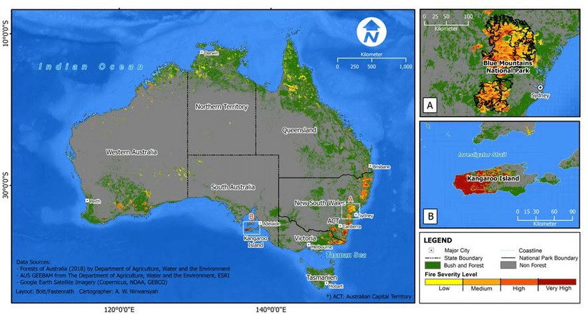
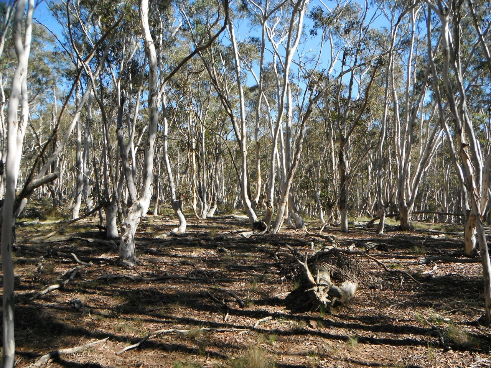
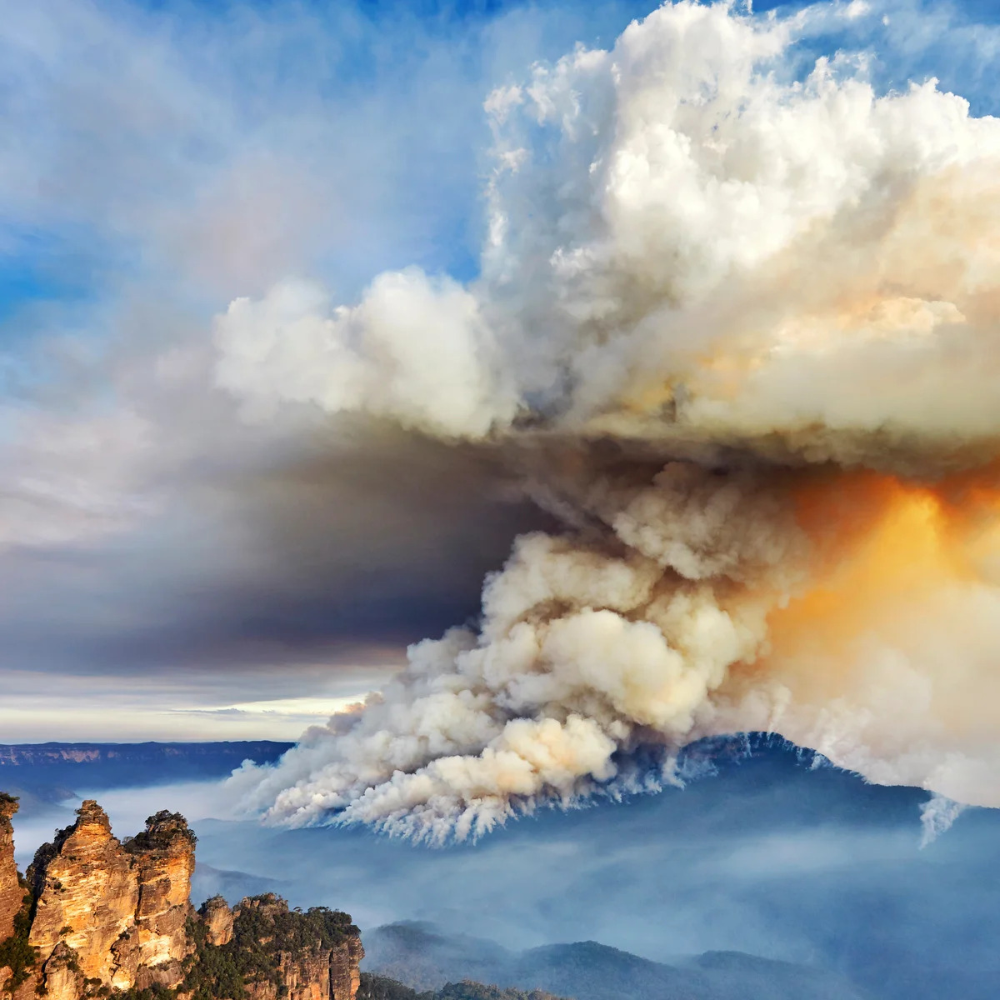
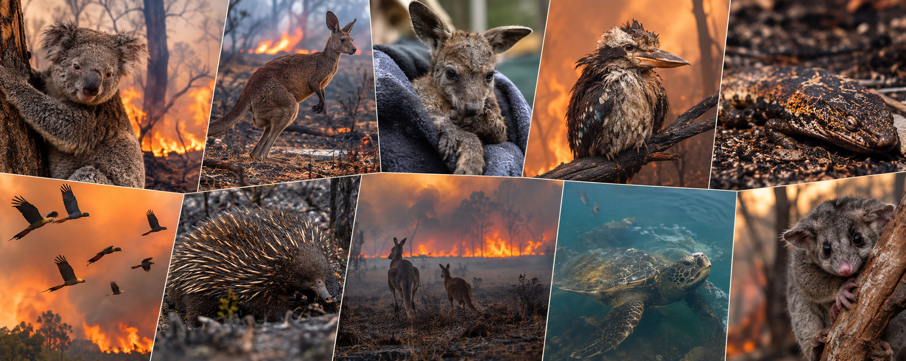
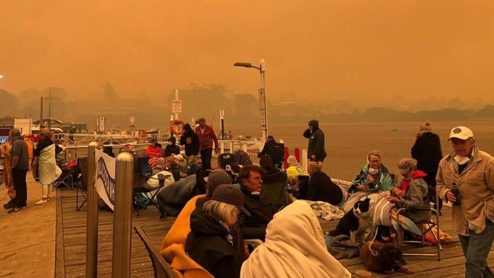
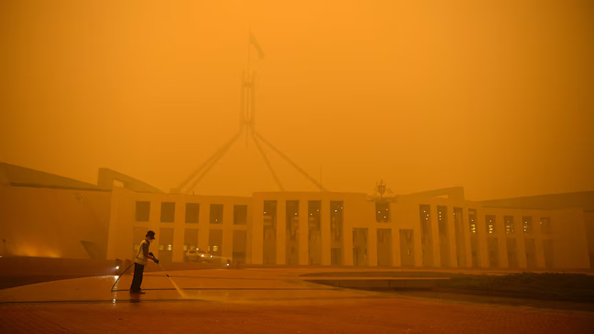
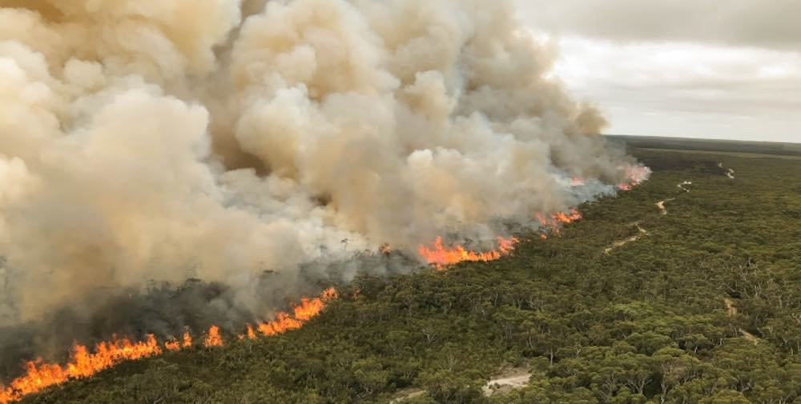
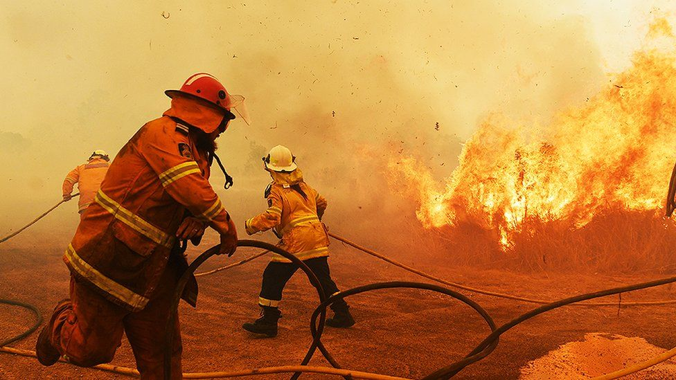
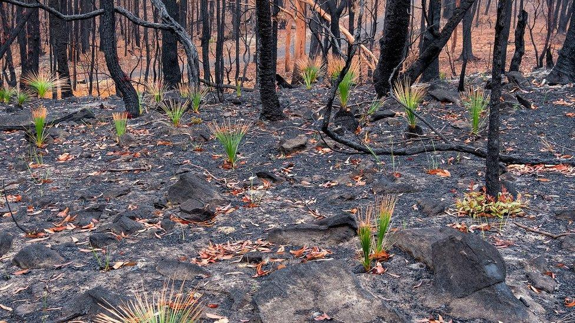
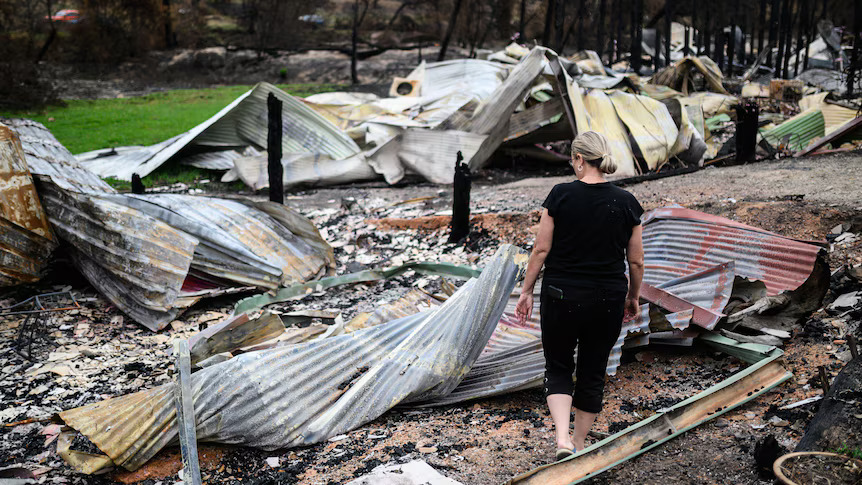

QUICK STATS TO REMEMBER
CONTEXT AND OVERVIEW
Key facts
Event name
Black Summer bushfires, also called the 2019 to 2020 Australian bushfire season
Dates
Fires started in June 2019 in Queensland and northern NSW, peaked from September 2019 to February 2020, and mostly ended after heavy rain in February and March 2020
Location
Mainly south eastern Australia, especially New South Wales (NSW) and Victoria
Other areas affected
Queensland, South Australia (especially Kangaroo Island), Tasmania, Western Australia and the Australian Capital Territory (ACT)
Size
Over 24 million hectares burned across the country, which is bigger than the whole country of Syria and similar in size to the United Kingdom
Type of hazard
- Bushfire (also called wildfire), which is a climatic and atmospheric hazard. The fires started off as a Natural hazard, then became a Natural Disaster, and finally escalated into a catastrophe.
- Many fires were so large they are called “megafires”
- Some fires created their own weather, including fire generated thunderstorms
How human settlement and land use were involved
Many Australian towns and suburbs are built right next to bushland. This area is called the wildland urban interface. It means houses, farms and people are placed very close to flammable forest.
- Many people choose to live in bushland areas for the lifestyle and nature
- Small towns often have only one or two roads in and out, which makes evacuation dangerous
- Past land clearing, logging and forestry practices changed how forests burn in some regions
- Farms, fences, sheds and livestock were all lost in rural communities
- Settlement did not cause the fires directly, but it meant more people and property were at risk

CAUSES AND EFFECTS
Natural causes
A combination of natural conditions created extreme fire weather.
Drought
- Eastern Australia was in a long, severe drought from about 2017 to 2019, this became kown as the Tinderbox Drought and was the driest drought on record
- This drought was mostly influenced by unusual atmospheric blocking and strong oceanic rivers
Record heat
- 2019 was Australia’s hottest and driest year on record
- On 18 December 2019, Australia recorded its hottest national average maximum temperature ever, about 41.9 degrees Celsius
- Heatwaves dried out the land even more
Climate patterns
- A strong positive Indian Ocean Dipole in 2019 meant warm water in the western Indian Ocean and cooler water near Australia
- This reduced moisture and rainfall across Australia by 50% and dried out many rivers
- A weakened Southern Annular Mode also brought hot, dry winds to the east coast
Ignition and spread
- Dry lightning started many fires
- Strong winds and low humidity spread the fires fast
- Many fires burned for weeks or months and joined together
Human and environmental conditions that made it worse
Climate change
- Scientists say climate change makes extreme heat and dangerous fire weather more likely
- Fire seasons in Australia now start earlier and last longer
- Studies found climate change made conditions for the Black Summer fires at least 30 percent more likely
Vegetation
- Eucalyptus (gum) forests contain oils that burn easily
- Some eucalypts also drop bark and leaves that help fire spread
- Fuel loads (dry leaves, bark and branches on the ground) had built up in many places
Other human factors
- Some fires were started by human activity, including accidents, power lines and arson, but lightning caused many of the largest fires
- Fire services were stretched because many fires burned at the same time in several states
Fire behaviour
- Pyrocumulonimbus clouds formed over some fires, creating fire generated thunderstorms, lightning and wind
- Burning embers (spot fires) travelled kilometres ahead of the main fire
- The Gospers Mountain fire in NSW became the largest single forest fire ever recorded in Australia, burning over 500,000 hectares


Immediate effects
On people
- Around 3,000 homes were destroyed and thousands more damaged
- Thousands of people were evacuated, and became displaced without anywhere to go
- Many towns were cut off by fire, debris, and smoke
On the environment
- Around 3 billion animals were killed or displaced, according to a report for WWF Australia
- This includes mammals, birds, reptiles and frogs
- Large areas of forest, bush and farmland were burned, and are still undergoing large conservation efforts to help reforestation and regrowth
- Ash and debris washed into rivers, harming water quality and killing fish
On infrastructure
- Roads, bridges, power lines, phone towers and water supplies were damaged, this caused a huge lack of communication between many people
- Train lines and highways were closed
- Airports, such as Canberra, had many flights disrupted by smoke, which stalled much needed rescue efforts
Longer term effects
On people
- Months of inhaling toxic smoke triggered lasting respiratory damage, worse asthma, and elevated cardiovascular risks for survivors
- Pregnant mothers exposed to the smoke faced higher rates of premature births and babies with low birth weights.
- Mental health problems such as anxiety, depression and PTSD affected survivors and firefighters
- Many families lost homes, income and businesses
On the environment
- Some species lost huge amounts of habitat, including koalas, the glossy black cockatoo and the Kangaroo Island dunnart
- Some rainforests that rarely burn, including parts of the Gondwana Rainforests of Australia, were damaged
- The fires released an estimated 400 million tonnes of carbon dioxide
- Smoke reached New Zealand, South America and travelled around the world
On the economy
- Insured losses were around $2.3 billion in claims
- Years of insurance delays and supply shortages left thousands of families stuck in temporary or inadequate housing
- Total economic costs were estimated at up to about $100 billion when health, tourism and lost income were included
- Tourism, farming, forestry, wine and small businesses suffered big losses

HUMAN IMPACT AND RESPONSE
How many people were affected
- Smoke related deaths: about 445 estimated
- Displaced: tens of thousands of people evacuated or fled
- Millions of Australians breathed unhealthy smoke for weeks
- Of the 33 people who tragically died directly in the Black Summer bushfires, 24 were civilians and 9 were firefighters

Key examples
Mallacoota, Victoria
On 31 December 2019, around 4,000 people gathered on the beach as fire surrounded the town and the sky turned red and black. The navy and others later evacuated people by sea.
Canberra and Sydney
Some of the worst air quality in the world, with smoke levels reaching hazardous
Kangaroo Island, SA
About half the island burned, including large amounts of wildlife habitat and farmland
Southern NSW coast
Communities such as Cobargo and Batemans Bay were hit hard during the holiday season, almost all of both communities had brunt to the ground, including many houses and businesses


Human response
The response happened in stages.
1. Evacuation
- Emergency warnings, “leave now” messages and road closures
- Evacuation centres opened in towns and cities
- Sea rescues were carried out from Mallacoota
- Tourists were told to leave fire zones along the NSW and Victorian coasts
2. Rescue
- Firefighters (mostly volunteers) worked for months
- Aircraft dropped water and fire retardant
- The Australian Defence Force helped with transport, supplies and evacuations
- Emergency workers checked on isolated communities
3. Relief
- Food, water, fuel and money were given to people affected
- Donations flooded in from around Australia and the world
- Comedian Celeste Barber raised over $50 million in a single fundraiser
4. Rebuilding
- Grants and low interest loans for families, farmers and businesses
- Clean up programs to remove ash, debris and asbestos
- Long term recovery and mental health support
Organisations and governments that took action
- State fire services: NSW Rural Fire Service (RFS), Country Fire Authority (CFA) in Victoria and other state agencies
- Federal government: set up the National Bushfire Recovery Agency with $2 billion in funding
- Australian Army: called in thousands of reservists
- Charities: Red Cross, Salvation Army, St Vincent de Paul and others
- Wildlife groups: WIRES, vets, zoos and volunteers rescuing and feeding animals
- International help: firefighters and equipment came from the US, Canada, New Zealand and other countries

Challenges
- The fires were too many and too large to fight everywhere at once
- Many firefighters were volunteers and became exhausted after months of work
- Power and phone towers failed, so people could not get warnings or call for help
- Smoke and fire made evacuations dangerous
- Roads were blocked, and some towns had no fuel or food
- Some people criticised the government for slow or unclear communication
Successes
- Huge public support and donations
- Strong volunteer effort and community spirit
- Thousands of lives were saved by evacuations and warnings
- Heavy rain in February 2020 finally put out most of the remaining fires
- Many towns were protected by firefighters despite the extreme conditions
PREPARATION AND PREVENTION
Was Australia prepared?
Australia was prepared in some ways but not for a fire season this extreme.
What already existed
- Warning systems and fire danger ratings
- Total fire bans on dangerous days
- Building codes for homes in bushfire zones
- Planned burns to reduce fuel
- Large numbers of trained volunteers
Problems
- Warnings did not always reach everyone, especially when phone towers failed
- Planned burns are harder to do safely in very dry conditions, so less hazard reduction was done in some areas
- Fire services were stretched because the fires hit many states at the same time
- Some experts warned before the season that it would be severe, and some felt those warnings were not acted on early enough
- A “catastrophic” fire danger rating was given to the Sydney region for the first time in November 2019
Changes and policies after the event
National changes
- Royal Commission into National Natural Disaster Arrangements ran from 2020 to 2021 and made 80 recommendations
- National Recovery and Resilience Agency was created in 2021 to coordinate recovery and disaster preparation
- Australian Fire Danger Rating System: a new, simpler rating system introduced in 2022 to help people understand and receive warnings more effectively
- The federal government implemented better national coordination, shared aircraft and equipment, and clearer roles for provincial and municipal governments
Other changes
- Emphisized a stronger focus on climate risk and preparing for longer fire seasons
- Created more support for hazard reduction and fire management
- Greater interest in Indigenous cultural burning, which uses small, cool fires to manage land
- Councils updated planning rules and building standards in some bushfire prone areas to help save inferstructure incase of future fires
Human environment interdependence
The fires show how connected people and the environment are.
- The environment (drought, heat, wind and forest type) shape how the fires behave, so human choices (where we build, how we manage land, and our greenhouse gas emissions) also change to lessen damage the fires cause
- The fires then harmed the environment, air quality, water and wildlife, this damage affected people again through health, food, tourism and the economy
- People depend on healthy ecosystems, and ecosystems are affected by what people do
CONTINUITY AND CHANGE
How landscapes and settlements changed
Landscape
- Huge areas of forest were burned, and some will take decades to recover fully
- Many native plants started regrowing quickly, such as eucalypts sprouting from burned trunks
- Some species may not even return if their habitat was too badly damaged, this can have a major effect on many ecosystems
- Many reptiles and semi aquatic animals where relocated becuase the body of water they lived in had dried up
Settlements and human systems
- Many towns lost a mojority of buildins and had to come together to rebuild
- Some rebuilt structures used stricter bushfire safe designs
- Alot of people moved away after these fires becuase of the stress and havoc
- Councils changed planning rules and evacuation plans
- Farmers had to replace fences, livestock and equipment, they also had to recultivate thier land
What stayed the same
- Fire is a natural part of the Australian environment, and many native plants depend on it, especially the ash that helps to fertilize lands that where not burned
- Many people still live in bushfire prone areas
- Volunteers are still the backbone of firefighting in Australia, this helps to show the strength they have as a community


Resilience
More resilient
- Stronger community networks and volunteer groups
- Better awareness of fire risk and the need to prepare
- Improved planning, funding and national coordination
- Many communities created local recovery groups
Less resilient
- Trauma, anxiety and stress affected many survivors and firefighters
- People faced financial hardship, especially without insurance
- The recovery was interrupted by the COVID 19 pandemic in 2020 and floods soon after
SIGNIFICANCE AND PERSPECTIVE
Why it was important
For Australia
- "Black Summer" was one of the largest and most destructive fire seasons in Australia’s recorded history
- It shaped national conversations about climate change, emergency planning and land management and led to a Royal Commission and new national agencies
- It affected the whole country, not just fire zones, because of smoke and economic costs
For the world
- Images of red skies, people on beaches and burned wildlife were seen around the world
- Smoke travelled across the Pacific Ocean to South America, and effected many other countrys becuase the smoke had stopped many international flights and flight paths
- It became a major example in global discussions about climate change and extreme weather
- It showed that even wealthy, well prepared countries can struggle with extreme disasters
Comparison with other fires
Black Saturday (2009)
173 deaths, but a much smaller area burned
Ash Wednesday (1983)
75 deaths
Black Summer
Fewer deaths than Black Saturday, but far larger in area and in effects on wildlife and smoke
How different groups experienced it
Rural residents
They faced danger first, lost homes and farms, and had a long recovery
City residents
Mostly dealt with smoke, poor air quality, cancelled events and health warnings
Government
- Praised for some actions such as sending the Defence Force and creating the recovery agency
- Criticised for slow action, the Prime Minister taking a holiday during the crisis, and the lack of action on climate change
Wealthier vs poorer people
- People with insurance and savings could usually recover faster
- Low income families, renters and uninsured people faced bigger challenges, especially becuase alot of them got low priority compared to wealthier affected families
First Nations peoples
- alot of first nations people lost cultural sites, sacred places and land
- Many argued that traditional fire knowledge should have been used more to help prevent major damage and to help put out the fires
- Cultural burning gained more attention after the fires, becuase of the chance it could get out of control and start a simaler event
Local vs global views
- Locals focused on survival, community and rebuilding
- Global audiences saw it as a warning sign about climate change
ETHICAL AND ENVIRONMENTAL CONSIDERATIONS
Ethical issues in recovery and aid
- There were many debates over whether aid reached people fairly and quickly enough, also questions about how donations were shared between charities and whether money was spent on time
- Concerns that some people, such as renters and those without insurance, were missed by the charities and government assistance
- Criticism of the government response, including the Prime Minister’s holiday during the fires, ands what could have been prevented if prime minister Scott Morrison was there to help keep things in check
- Debate about whether volunteers should be paid or supported more, since many lost income while fighting fires and where effected just as much by the fires
Did human decisions make it worse?
- Building homes in high risk bushland areas did cause some more damage than what could have occured
- Slow action on climate change and greenhouse gas emissions also caused a increase in the fires
- Reduced hazard burning in some areas
- Early warnings from former fire chiefs about the coming season were criticised as not being acted on in time
Our responsibilities
Land use
- Stay in touch and up to date during fire season
- Try to inform people around you like familiy, friends, and peers if fires start to get worse
- Keep a clear space around communities to cut off fire from reaching them
Risk reduction
- Improve warning systems and make sure they work if power or phones fail
- Support firefighters and volunteers so they feel more encouraged to help
- Make evacuation plans and practise them
Environmental stewardship
- Protect wildlife and habitats by rasing funds to help the conservation on preservation when fires occur
- Take action to reduce greenhouse gas emissions
- Respect and include First Nations knowledge in land management
- Support recovery of burned ecosystems and relocation of animals and organisms
KEY TERMS
The Black Summer bushfires were a major natural hazard caused by drought, record heat and extreme fire weather, made worse by climate change and human settlement in bushland. They killed people, destroyed homes, harmed wildlife and affected millions through smoke. Governments, volunteers and communities responded strongly, and the event led to new policies and national agencies. It remains an important example of how humans and the environment are connected, and why preparation, climate action and land management matter.
BIBLIOGRAPHY
The Sources I Used
- Black Summer Bushfires NSW 2019-20
- Black Summer | Australian Public Service Commission
- 2019-2020 Bushfires
- Australia's 2019/20 Black Summer fire weather
- Oxford Academic
- Understanding the effects of the 2019–20 fires
- Black summer bushfires wiped billions from tourism supply chains
- Australia's 'black summer' bushfires showed the impact of human-wrought change
- socioeconomic Impacts of the Black Summer